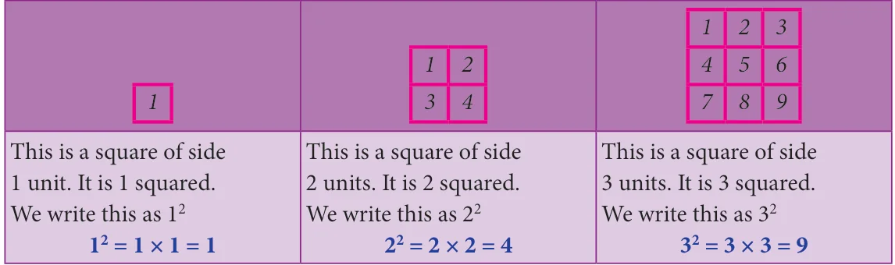
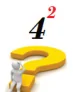
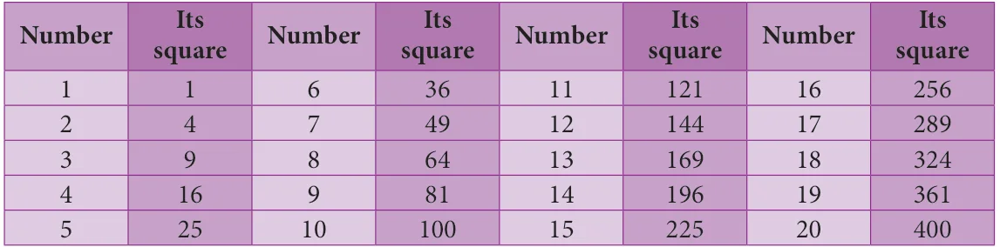

More often we write like this:

\(4 = 16\)
This says "4 squared is 16"
The 2 at the top stands for squared and it indicates the number of times the number 4
appears in the product \((4 = 4 \times 4 = 16)\). The numbers 1, 4, 9, 16, ... are all square numbers (also called perfect square numbers). Each of them is made up of the product of same two factors. A natural number n is called a square number, if we can find another natural number m
such that \(n = m\) .
Is 49 a square number? Yes, because it can be written as 7 .Is 50 a square number? The following table gives the squares of numbers up to 20.

Try to extend the table up to 50 numbers! We can now easily verify the following properties of square numbers by referring the table given above: The square numbers end with 0, 1, 4, 5, 6 and 9 only. If a number ends with 1 or 9, its square ends with 1. If a number ends with 2 or 8, its square ends with 4. If a number ends with 3 or 7, its square ends with 9. If a number ends with 4 or 6, its square ends with 6. If a number ends with 5 or 0, its square also ends with 5 or 0 respectively. Square of an odd number is always odd and the square of an even number is always even. Numbers that end with 2,3,7 and 8 are not perfect squares.
Think
- Is the square of a prime number, prime?
- Will the sum of two perfect squares always be a perfect square? What about their
difference and their product?
Try these
- Which among 256, 576, 960, 1025, 4096 are perfect square numbers? (Hint: Try to extend the table of squares already seen).
- One can judge just by look that each of the following numbers 82, 113, 1972, 2057,
8888, 24353 is not a perfect square. Explain why?
1.6.1 Some more special properties of square numbers
- The square of a natural number other than 1, is either a multiple of 3 or exceeds a multiple of 3 by 1.
- The square of a natural number, other than 1, is either a multiple of 4 or exceeds a multiple of 4 by 1.
- The remainder of a perfect square when divided by 3, is either 0 or 1 but never 2.
- The remainder of a perfect square, when divided by 4, is either 0 or 1 but never 2 and 3.
- When a perfect square number is divided by 8, the remainder is either 0 or 1 or 4, but
will never be equal to 2, 3, 5, 6 or 7.

Note
If a perfect square number ends in zero, then it must end with even number of zeros always. We can verify this for a few numbers in the table given below. Number 10 20 30 40 ... 90 100 110 ... ... Its Square 100 400 900 1600 ... 8100 10000 12100 ... \(\frac{2000}{4000000}\) ...
Think
Consider the claim: "Between the squares of the consecutive numbers n and (n+1), there are 2n non-square numbers". Can it be true? How many non-square numbers are there between 2500 and 2601? Verify the claim.